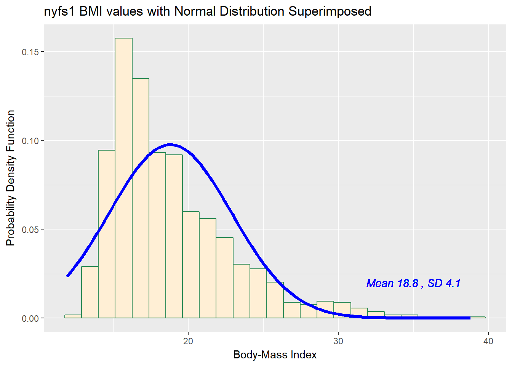
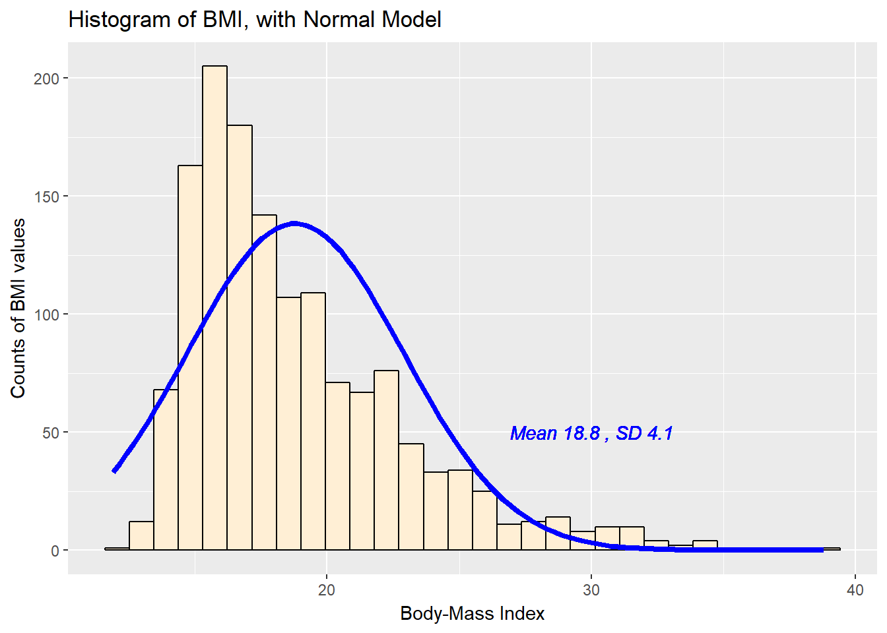
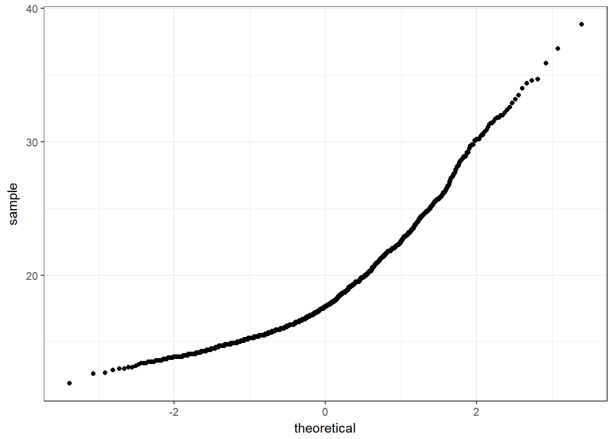
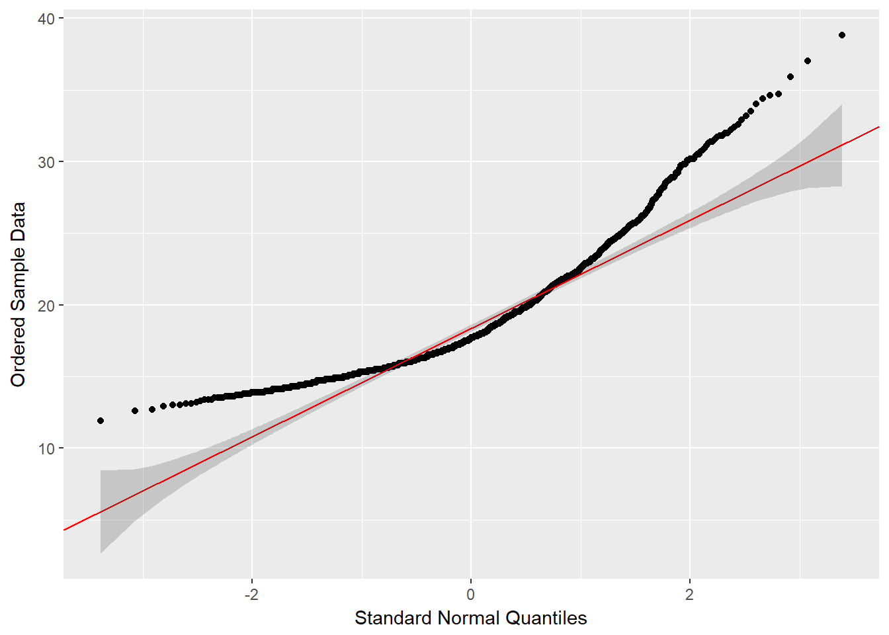
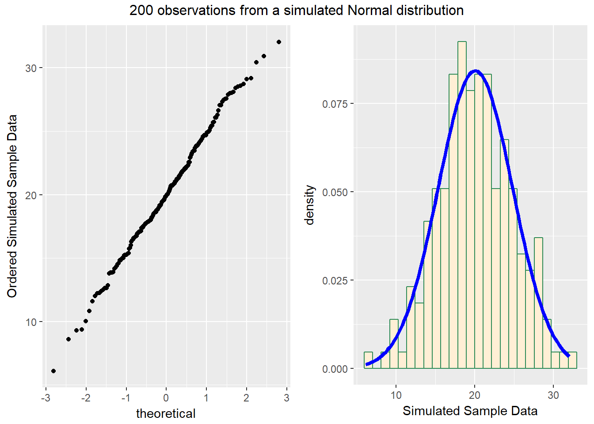
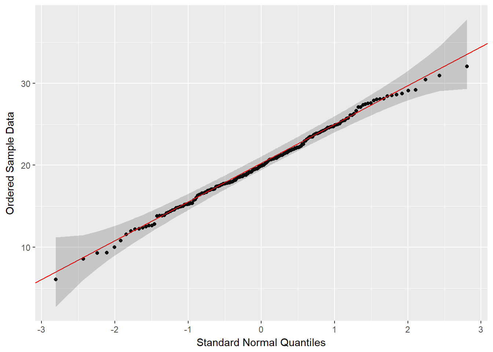
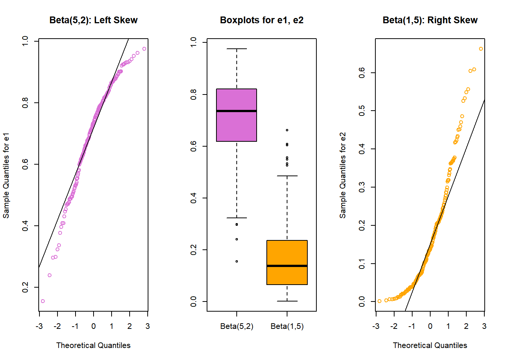
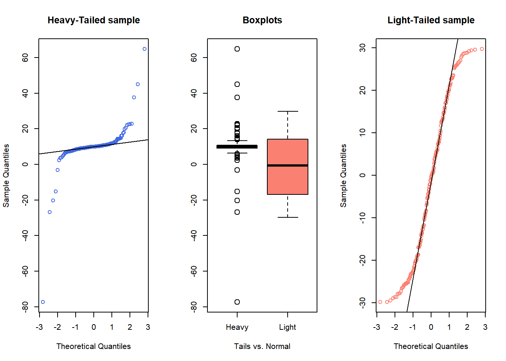
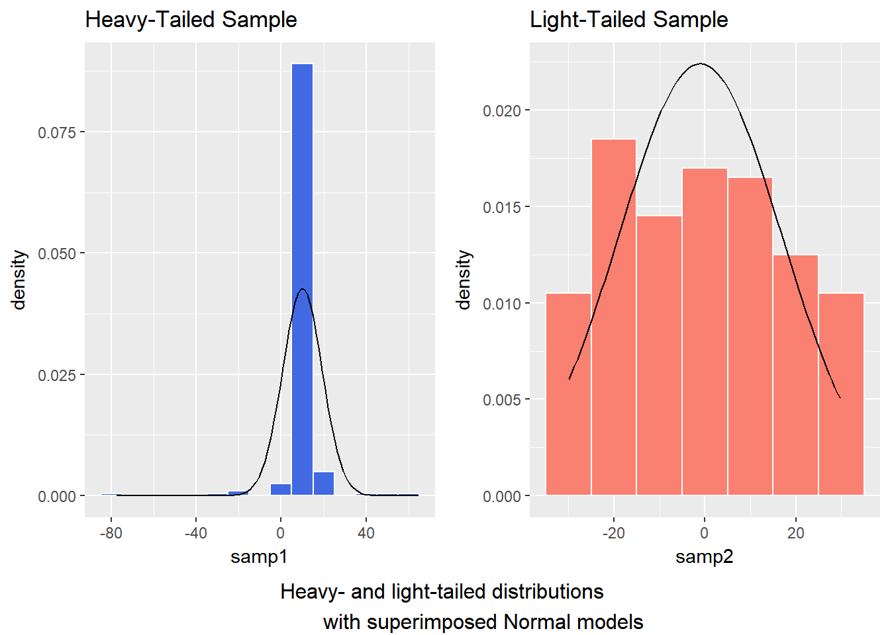
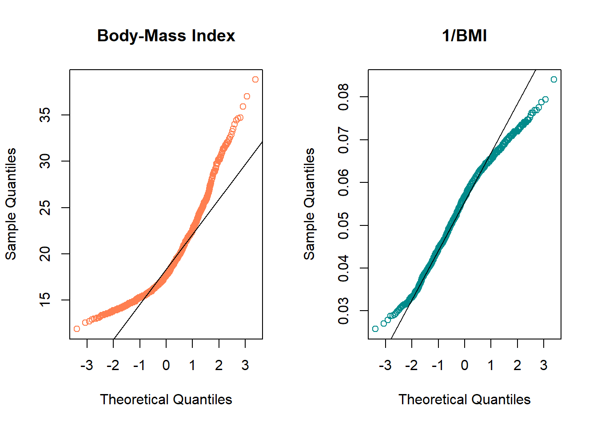

Chapter 8 Assessing Normality
Data are well approximated by a Normal distribution if the shape of the data’s distribution is a good match for a Normal distribution with mean and standard deviation equal to the sample statistics.
- the data are symmetrically distributed about a single peak, located at the sample mean
- the spread of the distribution is well characterized by a Normal distribution with standard deviation equal to the sample standard deviation
- the data show outlying values (both in number of candidate outliers, and size of the distance between the outliers and the center of the distribution) that are similar to what would be predicted by a Normal model.
We have several tools for assessing Normality of a single batch of data, including:
- a histogram with superimposed Normal distribution
- histogram variants (like the boxplot) which provide information on the center, spread and shape of a distribution
- the Empirical Rule for interpretation of a standard deviation
- a specialized normal Q-Q plot (also called a normal probability plot or normal quantile-quantile plot) designed to reveal differences between a sample distribution and what we might expect from a normal distribution of a similar number of values with the same mean and standard deviation
8.1 Empirical Rule Interpretation of the Standard Deviation
For a set of measurements that follows a Normal distribution, the interval:
- Mean \(\pm\) Standard Deviation contains approximately 68% of the measurements;
- Mean \(\pm\) 2(Standard Deviation) contains approximately 95% of the measurements;
- Mean \(\pm\) 3(Standard Deviation) contains approximately all (99.7%) of the measurements.
Again, most data sets do not follow a Normal distribution. We will occasionally think about transforming or re-expressing our data to obtain results which are better approximated by a Normal distribution, in part so that a standard deviation can be more meaningful.
For the BMI data we have been studying, here again are some summary statistics…
mosaic::favstats(nyfs1$bmi) min Q1 median Q3 max mean sd n missing
11.9 15.8 17.7 20.9 38.8 18.8 4.08 1416 0The mean is 18.8 and the standard deviation is 4.08, so if the data really were Normally distributed, we’d expect to see:
- About 68% of the data in the range (14.72, 22.88). In fact, 1074 of the 1416 BMI values are in this range, or 75.8%.
- About 95% of the data in the range (10.64, 26.96). In fact, 1344 of the 1416 BMI values are in this range, or 94.9%.
- About 99.7% of the data in the range (6.56, 31.04). In fact, 1393 of the 1416 BMI values are in this range, or 98.4%.
So, based on this Empirical Rule approximation, do the BMI data seem to be well approximated by a Normal distribution?
8.2 Describing Outlying Values with Z Scores
The maximum body-mass index value here is 38.8. One way to gauge how extreme this is (or how much of an outlier it is) uses that observation’s Z score, the number of standard deviations away from the mean that the observation falls.
Here, the maximum value, 38.8 is 4.9 standard deviations above the mean, and thus has a Z score of 4.9.
A negative Z score would indicate a point below the mean, while a positive Z score indicates, as we’ve seen, a point above the mean. The minimum body-mass index, 11.9 is 1.69 standard deviations below the mean, so it has a Z score of -1.7.
Recall that the Empirical Rule suggests that if a variable follows a Normal distribution, it would have approximately 95% of its observations falling inside a Z score of (-2, 2), and 99.74% falling inside a Z score range of (-3, 3).
8.2.1 Fences and Z Scores
Note the relationship between the fences (Tukey’s approach to identifying points which fall within the whiskers of a boxplot, as compared to candidate outliers) and the Z scores.
The upper inner fence in this case falls at 28.55, which indicates a Z score of 2.4, while the lower inner fence falls at 8.15, which indicates a Z score of -2.6. It is neither unusual nor inevitable for the inner fences to fall at Z scores near -2.0 and +2.0.
8.3 Comparing a Histogram to a Normal Distribution
Most of the time, when we want to understand whether our data are well approximated by a Normal distribution, we will use a graph to aid in the decision.
One option is to build a histogram with a Normal density function (with the same mean and standard deviation as our data) superimposed. This is one way to help visualize deviations between our data and what might be expected from a Normal distribution.
ggplot(nyfs1, aes(x=bmi)) +
geom_histogram(aes(y = ..density..), bins=25, fill = "papayawhip", color = "seagreen") +
stat_function(fun = dnorm,
args = list(mean = mean(nyfs1$bmi), sd = sd(nyfs1$bmi)),
lwd = 1.5, col = "blue") +
geom_text(aes(label = paste("Mean", round(mean(nyfs1$bmi),1),
", SD", round(sd(nyfs1$bmi),1))),
x = 35, y = 0.02, color="blue", fontface = "italic") +
labs(title = "nyfs1 BMI values with Normal Distribution Superimposed",
x = "Body-Mass Index", y = "Probability Density Function")
Does it seem as though the Normal model (as shown in the blue density curve) is an effective approximation to the observed distribution shown in the bars of the histogram?
We’ll return shortly to the questions:
- Does a Normal distribution model fit our data well? and
- If the data aren’t Normal, but we want to use a Normal model anyway, what should we do?
8.3.1 Histogram of BMI with Normal model (with Counts)
But first, we’ll demonstrate an approach to building a histogram of counts (rather than a probability density) and then superimposing a Normal model.
## ggplot of counts of bmi with Normal model superimposed
## Source: https://stat.ethz.ch/pipermail/r-help//2009-September/403220.html
ggplot(nyfs1, aes(x = bmi)) +
geom_histogram(bins = 30, fill = "papayawhip", color = "black") +
stat_function(fun = function(x, mean, sd, n)
n * dnorm(x = x, mean = mean, sd = sd),
args = with(nyfs1,
c(mean = mean(bmi), sd = sd(bmi), n = length(bmi))),
col = "blue", lwd = 1.5) +
geom_text(aes(label = paste("Mean", round(mean(nyfs1$bmi),1),
", SD", round(sd(nyfs1$bmi),1))),
x = 30, y = 50, color="blue", fontface = "italic") +
labs(title = "Histogram of BMI, with Normal Model",
x = "Body-Mass Index", y = "Counts of BMI values")
8.4 Does a Normal model work well for the Ages?
Now, suppose we instead look at the age.exam data. Do these data appear to follow a Normal distribution?
ggplot(nyfs1, aes(x=age.exam)) +
geom_histogram(aes(y = ..density..), binwidth=1,
fill = "papayawhip", color = "seagreen") +
stat_function(fun = dnorm,
args = list(mean = mean(nyfs1$age.exam),
sd = sd(nyfs1$age.exam)),
lwd = 1.5, col = "blue") +
geom_text(aes(label = paste("Mean", round(mean(nyfs1$age.exam),1),
", SD", round(sd(nyfs1$age.exam),1))),
x = 13, y = 0.1, color="blue", fontface = "italic") +
labs(title = "nyfs1 Age values with Normal Distribution Superimposed",
x = "Age at Exam (years)", y = "Probability Density Function")
mosaic::favstats(nyfs1$age.exam) min Q1 median Q3 max mean sd n missing
3 6 9 12 16 8.86 3.68 1416 0The mean is 8.86 and the standard deviation is 3.68 so if the age.exam data really were Normally distributed, we’d expect to see: - About 68% of the data in the range (5.17, 12.54). In fact, 781 of the 1416 Age values are in this range, or 55.2%. - About 95% of the data in the range (1.49, 16.22). In fact, 1416 of the 1416 Age values are in this range, or 100%. - About 99.7% of the data in the range (-2.19, 19.9). In fact, 1416 of the 1416 Age values are in this range, or 100%.
How does the Normal approximation work for age, according to the Empirical Rule?
There is a function in the Love-boost.R script called Emp_Rule that can be used to do these calculations, so long as the variable has no missing data.
Emp_Rule(nyfs1$bmi)| count | proportion | |
|---|---|---|
| Mean +/- 1 SD | 1074 | 0.7585 |
| Mean +/- 2 SD | 1344 | 0.9492 |
| Mean +/- 3 SD | 1393 | 0.9838 |
| Entire Data Set | 1416 | 1 |
8.5 The Normal Q-Q Plot
A normal probability plot (or normal quantile-quantile plot) of the BMI results from the nyfs1 data, developed using ggplot2 is shown below. In this case, this is a picture of 1416 BMI results. The idea of a normal Q-Q plot is that it plots the observed sample values (on the vertical axis) and then, on the horizontal, the expected or theoretical quantiles that would be observed in a standard normal distribution (a Normal distribution with mean 0 and standard deviation 1) with the same number of observations.
A Normal Q-Q plot will follow a straight line when the data are (approximately) Normally distributed. When the data have a different shape, the plot will reflect that.
ggplot(nyfs1, aes(sample = bmi)) +
geom_point(stat="qq") +
theme_bw() # eliminate the gray background
8.5.1 A Fancy ggplot2 function - gg_qq
The lengthy function below (which is also part of the Love-boost.R script) produces a normal Q-Q plot with some appealing features, including a Q-Q line, and confidence interval estimates - original source here.
## Code from https://gist.github.com/rentrop/d39a8406ad8af2a1066c
## Slightly modified by T. Love
gg_qq <- function(x, distribution = "norm", ..., line.estimate = NULL, conf = 0.95,
labels = names(x)){
q.function <- eval(parse(text = paste0("q", distribution)))
d.function <- eval(parse(text = paste0("d", distribution)))
x <- na.omit(x)
ord <- order(x)
n <- length(x)
P <- ppoints(length(x))
df <- data.frame(ord.x = x[ord], z = q.function(P, ...))
if(is.null(line.estimate)){
Q.x <- quantile(df$ord.x, c(0.25, 0.75))
Q.z <- q.function(c(0.25, 0.75), ...)
b <- diff(Q.x)/diff(Q.z)
coef <- c(Q.x[1] - b * Q.z[1], b)
} else {
coef <- coef(line.estimate(ord.x ~ z))
}
zz <- qnorm(1 - (1 - conf)/2)
SE <- (coef[2]/d.function(df$z)) * sqrt(P * (1 - P)/n)
fit.value <- coef[1] + coef[2] * df$z
df$upper <- fit.value + zz * SE
df$lower <- fit.value - zz * SE
if(!is.null(labels)){
df$label <- ifelse(df$ord.x > df$upper | df$ord.x < df$lower, labels[ord],"")
}
p <- ggplot(df, aes(x=z, y=ord.x)) +
geom_point() +
geom_abline(intercept = coef[1], slope = coef[2], color="red") +
geom_ribbon(aes(ymin = lower, ymax = upper), alpha=0.2) +
labs(y = "Ordered Sample Data", x = "Standard Normal Quantiles")
if(!is.null(labels)) p <- p + geom_text( aes(label = label))
print(p)
## can print 25th and 75th percentiles if desired by removing the
## single # in the following line
# coef
}Having set up the function, we can now use it to look at the BMI data.
gg_qq(nyfs1$bmi)
8.6 Interpreting the Normal Q-Q Plot
The purpose of a Normal Q-Q plot is to help point out distinctions from a Normal distribution. A Normal distribution is symmetric and has certain expectations regarding its tails. The Normal Q-Q plot can help us identify data as - well approximated by a Normal distribution, or not because of - skew (including distinguishing between right skew and left skew) - behavior in the tails (which could be heavy-tailed [more outliers than expected] or light-tailed)
8.6.1 Data from a Normal distribution shows up as a straight line in a Normal Q-Q plot
We’ll demonstrate the looks that we can obtain from a Normal Q-Q plot in some simulations. First, here is an example of a Normal Q-Q plot, and its associated histogram, for a sample of 200 observations simulated from a Normal distribution.
set.seed(123431) # so the results can be replicated
# simulate 200 observations from a Normal(20, 5) distribution and place them
# in the d variable within the temp.1 data frame
temp.1 <- data.frame(d = rnorm(200, mean = 20, sd = 5))
# left plot - basic Normal Q-Q plot of simulated data
p1 <- ggplot(temp.1, aes(sample = d)) +
geom_point(stat="qq") +
labs(y = "Ordered Simulated Sample Data")
# right plot - histogram with superimposed normal distribution
p2 <- ggplot(temp.1, aes(x = d)) +
geom_histogram(aes(y = ..density..),
bins=25, fill = "papayawhip", color = "seagreen") +
stat_function(fun = dnorm,
args = list(mean = mean(temp.1$d),
sd = sd(temp.1$d)),
lwd = 1.5, col = "blue") +
labs(x = "Simulated Sample Data")
gridExtra::grid.arrange(p1, p2, ncol=2,
top ="200 observations from a simulated Normal distribution")
And here is another look at that same simulated data…
gg_qq(temp.1$d)
So, what are the characteristics of this simulation? The data appear to be well-modeled by the Normal distribution, because: - the points on the Normal Q-Q plot follow a straight line, in particular - there is no substantial curve (such as we’d see with data that were skewed) - there is no particularly surprising behavior (curves away from the line) at either tail, so there’s no obvious problem with outliers
8.6.2 Skew is indicated by monotonic curves in the Normal Q-Q plot
Data that come from a skewed distribution appear to curve away from a straight line in the Q-Q plot.
set.seed(123431) # so the results can be replicated
# simulate 200 observations from a beta(5, 2) distribution into the e1 variable
# simulate 200 observations from a beta(1, 5) distribution into the e2 variable
temp.2 <- data.frame(e1 = rbeta(200, 5, 2), e2 = rbeta(200, 1, 5))
p1 <- ggplot(temp.2, aes(sample = e1)) +
geom_point(stat="qq", color = "orchid") +
labs(y = "Ordered Sample e1", title = "Beta(5,2) sample")
p2 <- ggplot(temp.2, aes(sample = e2)) +
geom_point(stat="qq", color = "orange") +
labs(y = "Ordered Sample e2", title = "Beta(1,5) sample")
gridExtra::grid.arrange(p1, p2, ncol=2, top ="200 observations from simulated Beta distributions")
Note the bends away from a straight line in each sample. The non-Normality may be easier to see in a histogram.
p1 <- ggplot(temp.2, aes(x = e1)) +
geom_histogram(aes(y = ..density..),
binwidth=0.1, fill = "orchid1", color = "white") +
stat_function(fun = dnorm,
args = list(mean = mean(temp.2$e1),
sd = sd(temp.2$e1)),
col = "blue") +
labs(x = "Sample e1", title = "Beta(5,2) sample: Left Skew")
p2 <- ggplot(temp.2, aes(x = e2)) +
geom_histogram(aes(y = ..density..),
binwidth=0.1, fill = "orange1", color = "white") +
stat_function(fun = dnorm,
args = list(mean = mean(temp.2$e2),
sd = sd(temp.2$e2)),
col = "blue") +
labs(x = "Sample e2", title = "Beta(1,5) sample: Right Skew")
gridExtra::grid.arrange(p1, p2, ncol=2,
bottom ="Histograms with Normal curve superimposed")
8.6.3 Direction of Skew
In each of these pairs of plots, we see the same basic result.
- The left plot (for data e1) shows left skew, with a longer tail on the left hand side and more clustered data at the right end of the distribution.
- The right plot (for data e2) shows right skew, with a longer tail on the right hand side, the mean larger than the median, and more clustered data at the left end of the distribution.
You may want to see the lines to help you see what’s happening in the Q-Q plots. You can do this with our fancy approach, or with the qqnorm-qqline combination from base R.
par(mfrow=c(1,3))
qqnorm(temp.2$e1, col="orchid", main="Beta(5,2): Left Skew",
ylab="Sample Quantiles for e1")
qqline(temp.2$e1)
boxplot(temp.2$e1, temp.2$e2, names=c("Beta(5,2)", "Beta(1,5)"),
col=c("orchid", "orange"), main="Boxplots for e1, e2")
qqnorm(temp.2$e2, col="orange", main="Beta(1,5): Right Skew",
ylab="Sample Quantiles for e2")
qqline(temp.2$e2)
par(mfrow=c(1,1))8.6.4 Outlier-proneness is indicated by “s-shaped” curves in a Normal Q-Q plot
- Heavy-tailed but symmetric distributions are indicated by reverse “S”-shapes, as shown on the left below.
- Light-tailed but symmetric distributions are indicated by “S” shapes in the plot, as shown on the right below.
set.seed(4311)
# sample 200 observations from each of two probability distributions
samp1 <- rcauchy(200, location=10, scale = 1) # use a Cauchy distribution
samp2 <- runif(200, -30, 30) # a uniform distribution on (-30, 30)
par(mfrow=c(1,3)) ## set up plot window for one row, three columns
qqnorm(samp1, col="royalblue", main="Heavy-Tailed sample")
qqline(samp1)
boxplot(samp1, samp2, names=c("Heavy", "Light"), cex=1.5,
col=c("royalblue", "salmon"), main="Boxplots",
xlab="Tails vs. Normal")
qqnorm(samp2, col="salmon", main="Light-Tailed sample")
qqline(samp2)
par(mfrow=c(1,1)) ## return to usual plot window And, we can verify these initial conclusions with histograms.
temp.3 <- data.frame(samp1, samp2)
p1 <- ggplot(temp.3, aes(x = samp1)) +
geom_histogram(aes(y = ..density..),
binwidth=10, fill = "royalblue", color = "white") +
stat_function(fun = dnorm, args = list(mean = mean(temp.3$samp1),
sd = sd(temp.3$samp1))) +
labs(x = "samp1", title = "Heavy-Tailed Sample")
p2 <- ggplot(temp.3, aes(x = samp2)) +
geom_histogram(aes(y = ..density..),
binwidth=10, fill = "salmon", color = "white") +
stat_function(fun = dnorm, args = list(mean = mean(temp.3$samp2),
sd = sd(temp.3$samp2))) +
labs(x = "samp2", title = "Light-Tailed Sample")
gridExtra::grid.arrange(p1, p2, ncol=2,
bottom ="Heavy- and light-tailed distributions
with superimposed Normal models")
rm(samp1, samp2, temp.1, temp.2, temp.3, p1, p2) # cleaning up8.7 Does a Normal Distribution Fit the nyfs1 Data Well?
- Skewness is indicated by curves in the Normal Q-Q plot. Compare these two plots - the left is the original BMI data from the NYFS data frame, and the right plot shows the inverse of those values.
par(mfrow=c(1,2)) ## set up plot window for one row, two columns
qqnorm(nyfs1$bmi, main="Body-Mass Index", col="coral")
qqline(nyfs1$bmi)
qqnorm(1/(nyfs1$bmi), main="1/BMI", col="darkcyan")
qqline(1/nyfs1$bmi)
par(mfrow=c(1,1)) ## return to usual plot window - The left plot shows fairly substantial right or positive skew
- The right plot shows there’s much less skew after the inverse has been taken.
- Our conclusion is that a Normal model is a far better fit to 1/BMI than it is to BMI.
The effect of taking the inverse here may be clearer from the histograms below, with Normal density functions superimposed.
p1 <- ggplot(nyfs1, aes(x = bmi)) +
geom_histogram(aes(y = ..density..),
binwidth=2, fill = "coral", color = "white") +
stat_function(fun = dnorm,
args = list(mean = mean(nyfs1$bmi), sd = sd(nyfs1$bmi))) +
labs(x = "Body-Mass Index", title = "raw (untransformed) BMI")
p2 <- ggplot(nyfs1, aes(x = 1/bmi)) +
geom_histogram(aes(y = ..density..),
binwidth=0.005, fill = "darkcyan", color = "white") +
stat_function(fun = dnorm,
args = list(mean = mean(1/nyfs1$bmi),
sd = sd(1/nyfs1$bmi))) +
labs(x = "1 / Body-Mass Index",
title = "Inverse of BMI (1/BMI)")
gridExtra::grid.arrange(p1, p2, ncol=2,
top = textGrob("Comparing BMI to 1/BMI", gp=gpar(fontsize=15)))
# this approach to top label lets us adjust the size of type used
# in the main title
# note that you'll need to have called library(grid) or
# require(grid) for this to work properly
rm(p1, p2) # cleanupWhen we are confronted with a variable that is not Normally distributed but that we wish was Normally distributed, it is sometimes useful to consider whether working with a transformation of the data will yield a more helpful result. The next Section provides some initial guidance about choosing between a class of power transformations that can reduce the impact of non-Normality in unimodal data.